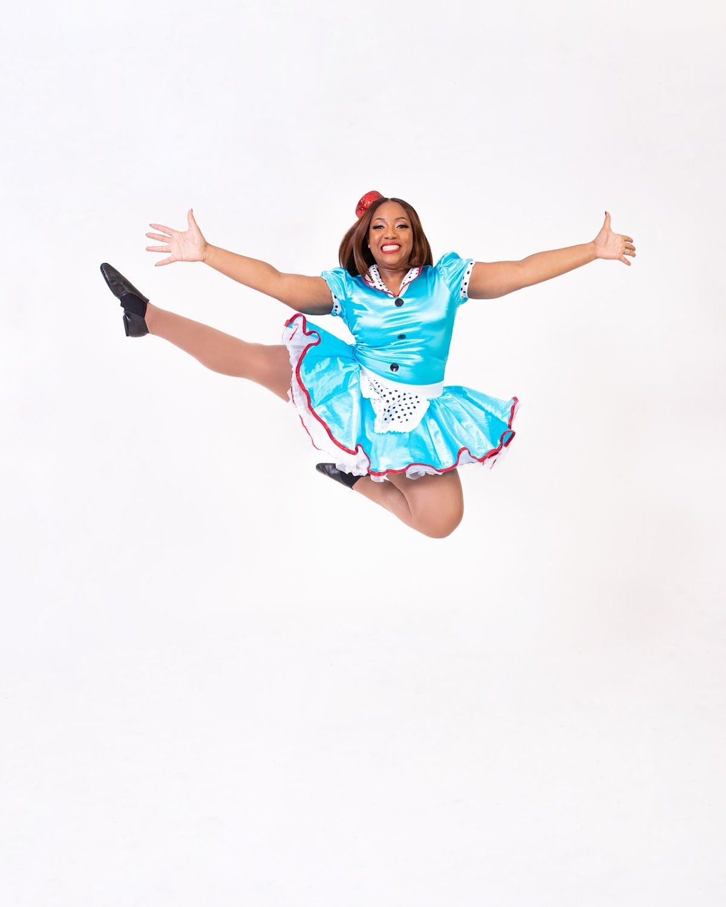
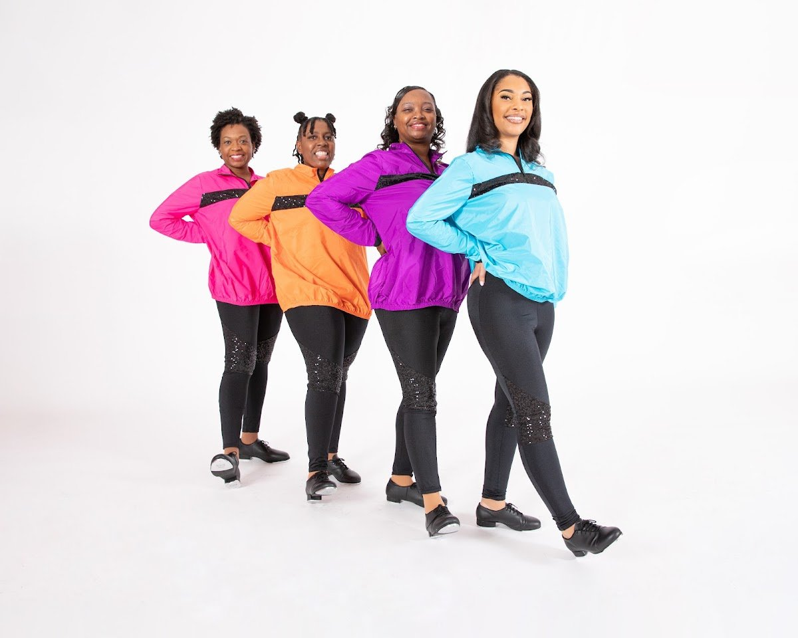
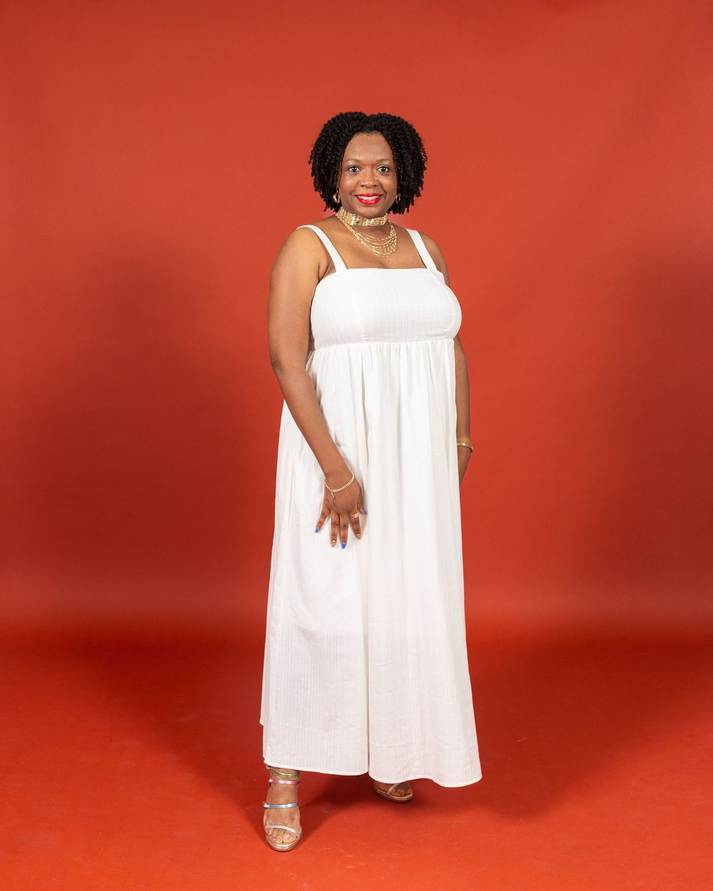
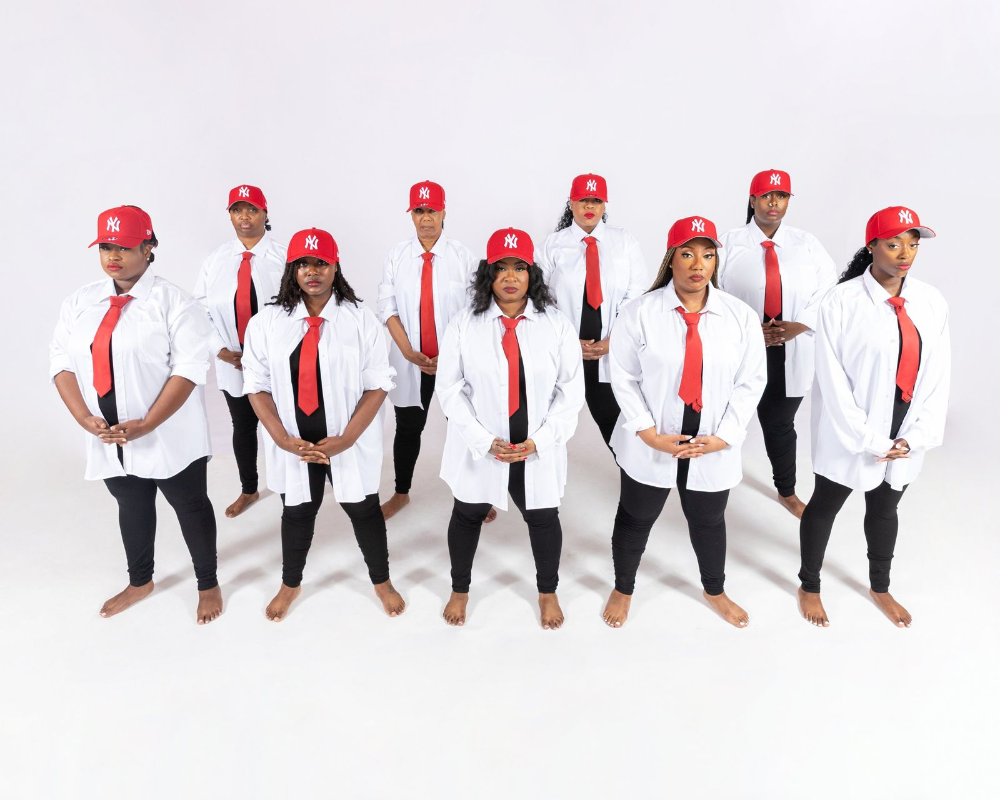
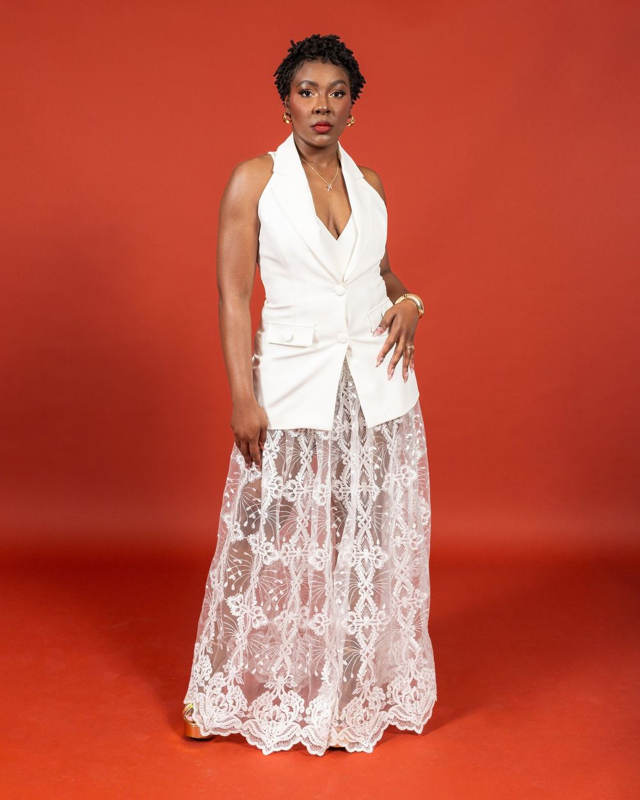

Classes
Classes for every age
Classes are grouped by age, from Babies and Tiny Tots through Juniors, Girls, and Teens. Registration for Season 12 runs through the school's online registration page.

01
Ballet
Ballet is the school's core class, taught at every age level. Pointe is offered as a specialty class.
An adult dancer in costume, mid-jump.

02
Tap and Jazz
Tap and jazz classes for children, teens, and adults.
Adult tap dancers in bright jackets and tap shoes.
03
Lyrical, Contemporary, and Hip Hop
Lyrical, contemporary, and hip hop classes for dancers of all ages.

04
Liturgical Dance and Mime
Liturgical dance and mime, taught as part of the school's Christian classes. Liturgical dance runs on Wednesday evenings in Slidell.
A member of the school's staff.
05
For the Youngest Dancers
Babies, Tiny Tots, and Momme and Me classes for the youngest dancers and their moms. Classes are grouped by age, from Babies and Tiny Tots through Juniors, Girls, and Teens.

06
Choreography, Workshops, and Recitals
Choreography for the school's performances and recitals, dance workshops, and a recital each season, with costumes for each dancer.
Adult dancers from the school.

07
Adult Ballet and Fitness
Adult ballet and fitness classes. In Kenner on the fourth Thursday of the month, 8:30 to 9:30 PM, and in Slidell on the fourth Tuesday, 8:00 to 9:00 PM.
A member of the school's staff.
08
Private Lessons and Performances
Private lessons, by the hour or by the half hour. The school also books performances for weddings, birthday parties, pastor anniversaries, and back-to-school concerts.